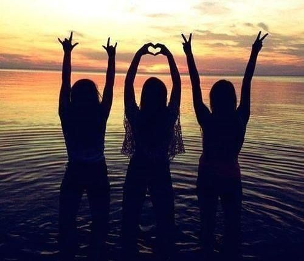

Ciao a tutti! Benvenuti nel mio sito personale,un luogo dove posso condividere le mie esperienze , interessi e passioni.
Qui troverete informazioni su di me, i miei studi,hobby e progetti futuri.
| Frequento l'itis di potenza,sono al quarto anno e ho scelto l'indirizzo di informatica, mi impegno a dare il massimo in ogni attività |
| Oltre allo studio mi piace uscire con gli amici che mi permette di sviluppare nuove abilità e socializzare con gli altri e mi piace giocare a calcio nel tempo libero. | 
| Il calcio per me è molto più di uno sport, il calcio mi ha insegnato a rimanere concentrato e a gestire le pressioni |
Interessi e passioni
Ecco alcune delle mie passioni e attività preferite:
- Sport
- Calcio
- Pallavolo
- Nuoto
- Arte e creatività
- Disegno
- Fotografie
- Viaggi
- Scoprire nuove culture
- Esplorazione in natura

l'esperienza sportiva va oltre il semplice esercizio fisico. È un viaggio emozionante, una sfida continua che mi permette di esplorare i miei limiti e scoprire nuove capacità.
Credo che l'arte abbia il potere di connettere le persone, di farci sentire vivi e di lasciarci riflettere sul mondo che ci circonda.
Viaggiare è un'avventura che va oltre il semplice spostamento da un luogo all'altro.
Progetti futuri
Ecco cosa ho in programma per il mio futuro:
- Continuare gli studi
- Approfondire le mie conoscenze
- Viaggi
- Pianificare un viaggio
- Sviluppo delle competenze
- Frequentare corsi per migliorare le mie capacità
I miei obbiettivi
La squadra del potenza calcio
Il Potenza Calcio è una storica società calcistica, fondata nel 1919, che rappresenta la città di Potenza, capoluogo della Basilicata.I colori sociali, il rosso e il blu, simboleggiano la passione e la determinazione della squadra.
Se clicchi la foto ti apre il sito del potenza calcio
Ecco un video del potenza
Grazie per aver visitato il sito